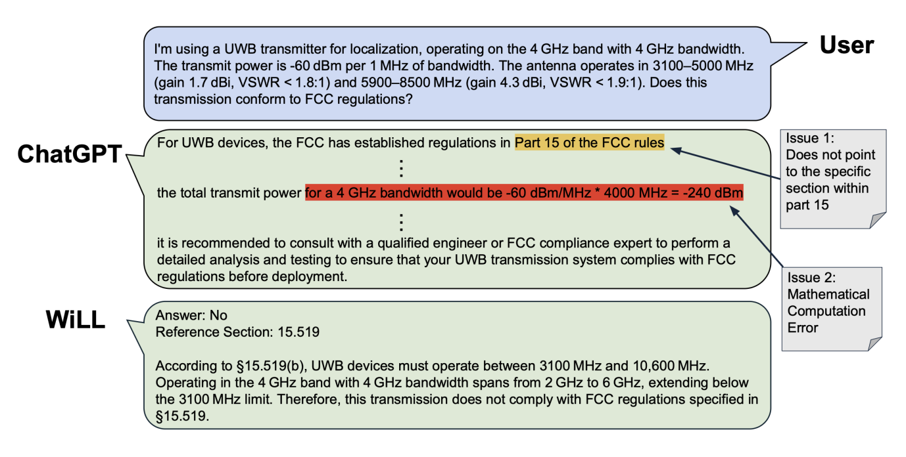

Project WiLL: Can we make FCC Experts out of LLMs?

This paper asks if Large Language Models (LLMs) can provide wireless expertise, particularly in the context of spectrum regulations. For any wireless system designer, an effective choice of wireless parameters such as operating band of frequencies and total radiated power are one of the first considerations in designing any wireless system. The current approach to do this relies on human FCC experts, who consult large volumes of techno-legal documentation on government regulations (e.g. FCC rulebooks), standards, etc. To ensure the exhaustive coverage of various use cases of wireless systems, these documentation tend to be quite long and very hard to parse through, even for an FCC expert. Given the success of LLMs in providing expert and accurate responses to varied other domains, it is quite natural to ask if they can also help in assisting wireless system designers in ensuring their compliance to these techno-legal rules and regulations. In this paper, we present WiLL, a system developed on the backbone of a state-of-the-art LLM, that acts as an assistive tool for wireless system designers to ensure their wireless system complies with regulations. Specifically, we focus on ensuring compliance with FCC regulations for various wireless systems that are designed for technologies such as WiFi, Bluetooth, LoRaWAN and Ultra Wide Band (UWB). We observe that WiLL achieves an accuracy of 78.57%, as compared to an average 51.77% accuracy of the state-of-the-art Large Language Models.
Citation
- Can we make FCC Experts out of LLMs?, Atul Bansal, Veronica Muriga, Jason Li, Lucy Duan and Swarun Kumar, HotMobile 2025 PAPER